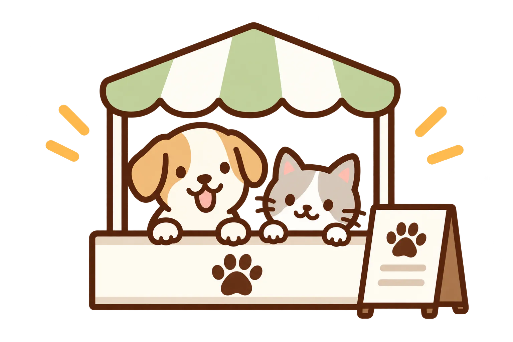
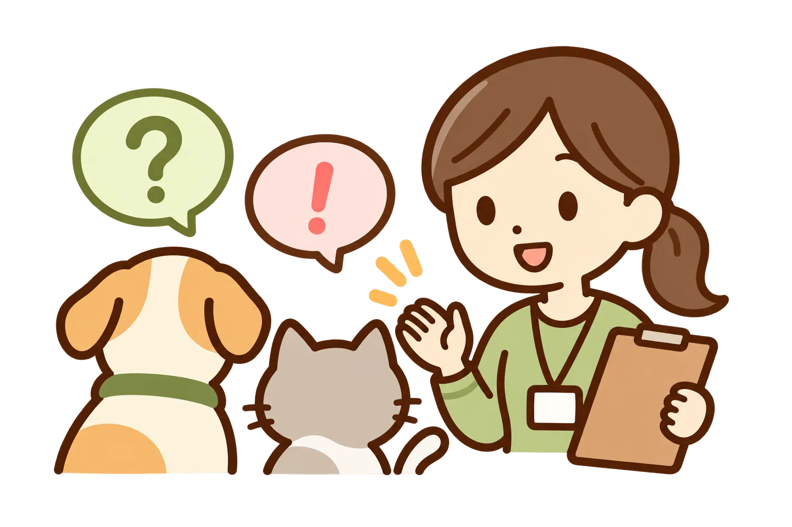
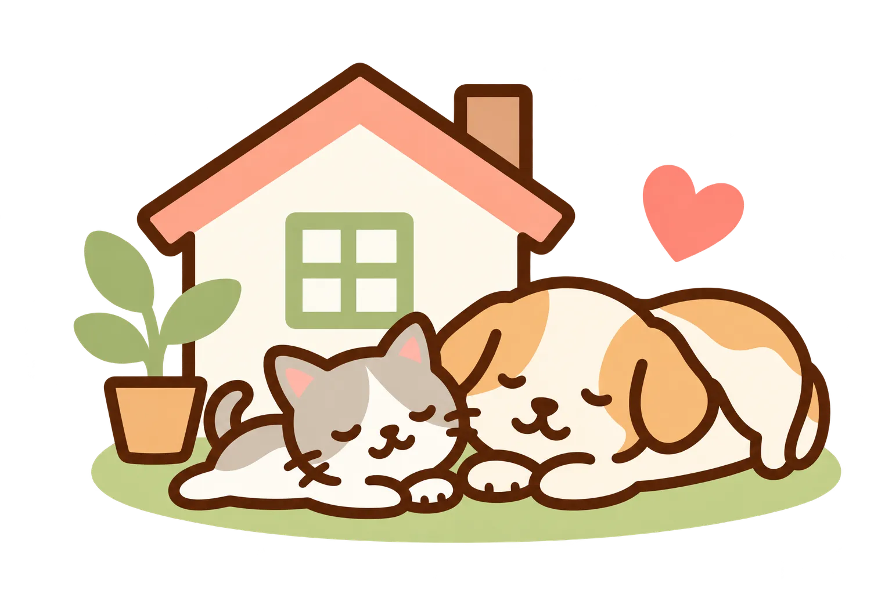
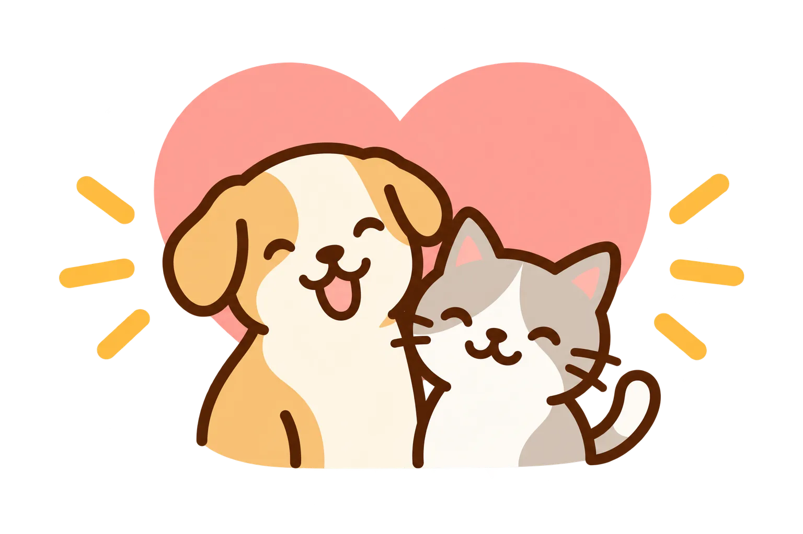
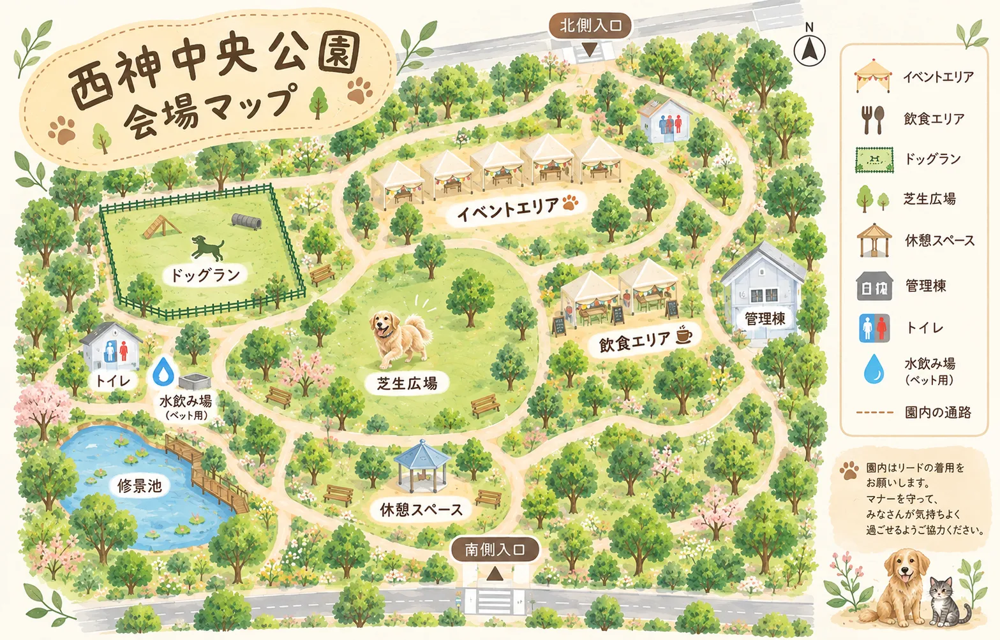

譲渡会とは
譲渡会は、新しい家族を待つ保護犬・保護猫たちと、未来の家族をつなぐ場所です。 会場では実際にふれあいながら、それぞれの性格や普段の様子を知ることができます。 すべてのしっぽに、あたたかな帰る場所が見つかることを願っています。


当日できること
会場では、保護犬・保護猫たちとのふれあいや、スタッフへのご相談ができます。 それぞれの性格や普段の様子を知りながら、気になる子との時間をお過ごしください。 譲渡をご希望の方には、お迎えまでの流れや必要な条件についてもご案内しています。
お迎えロードマップ

譲渡会に参加する
面談・ヒアリング
トライアル期間
正式譲渡会場内マップ

アクセス
- 西神中央公園
〒651-2273 兵庫県神戸市西区糀台６丁目１ -
駐車場なし
西神中央駅駐車場、プレンティ駐車場、タイムズ西神中央駅前などの近隣パーキングの利用をお願いいたします -
公共交通機関
神戸市営地下鉄西神・山手線「西神中央」駅から徒歩5分
FAQ
予約必須です。予約フォームから予約お願いします。
基本的には持ち物はございません。
その場で申し込む・トライアルの話を進める場合は、身分証明書（運転免許証や健康保険証など）があるとスムーズです。
予約いただければどなたでも参加可能です。
原則として、その日のうちに連れて帰ることはできません。
動物の体調管理や、飼育環境の確認（脱走対策ができているかなど）を行う必要があるためです。お話がまとまった後、ご自宅へのお届けやトライアル(お試し飼育期間：通常1〜2週間ほど)を経て正式譲渡となります。
性格はさまざまで、甘えん坊な子もいれば、少し怖がりな子もいます。
保護主や預かりボランティアさんが日頃のお世話をしているため、トイレのしつけができている子も多いです。ただし、環境が変わると緊張して隠れてしまったり、最初は粗相をしたりすることもあるため、「温かく見守り、時間をかけて信頼関係を築いていく覚悟」が大切です。